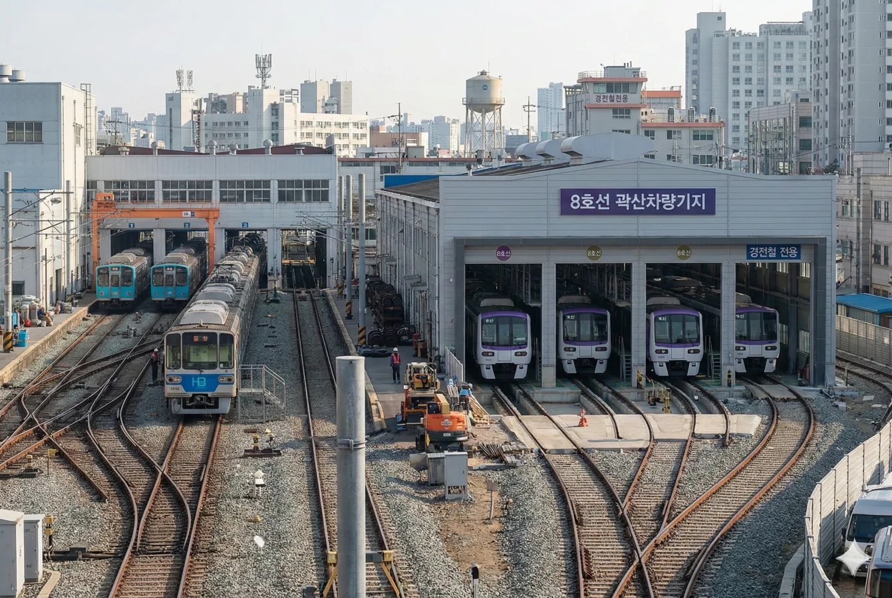

효빈광역시 남구 곽산동에 위치한 해수욕장. 효빈항 및 남구 공업단지와 인접해 있어, 거친 산업 현장의 분위기와 낭만적인 바다가 공존하는 독특한 경관을 자랑한다.
지하철역 출구로 나오면 도보 1분 거리에 백사장이 펼쳐지는 압도적인 접근성 덕분에, 효빈시민들의 여름 피서지이자 사계절 데이트 코스로 사랑받고 있다. 물론 솔로들에게는 그저 커플 지옥일 뿐이다.
1호선 곽암해수욕장역이 바로 앞에 있다. 효빈시 내에서 대중교통 접근성이 가장 좋은 해수욕장 중 하나다. 차가 없어도 슬리퍼 끌고 갈 수 있다는 점이 최대 장점. 이 때문에 여름철 주말이면 지하철 안에 튜브와 파라솔을 든 사람들로 가득 차, 마치 지하철이 피서지로 변한 듯한 착각을 불러일으킨다.
남구 특유의 공업단지와 항만 시설이 인근에 있어, 밤이 되면 공단의 불빛과 바다의 어둠이 대비되는 '인더스트리얼 야경'을 볼 수 있다. 다른 해수욕장들이 자연 친화적이라면, 곽암은 약간의 사이버펑크 감성이 섞여 있는 것이 특징.
최근에는 효빈시티투어버스 T08(해수욕장 순례) 노선의 핵심 경유지로 지정되어 관광객이 더욱 늘어났다.
매년 여름 곽암해수욕장 특설무대에서 열리는 대규모 축제. 낮에는 대형 물총 싸움인 '워터 워(Water War)'가, 밤에는 차량기지를 배경으로 화려한 불꽃놀이와 EDM 파티가 열린다. 물총 싸움에서 진 사람은 입수해야 한다는 암묵적인 룰이 있다.

사진 동호인들의 성지이자 철덕들의 핫플레이스. 인근에 위치한 곽암차량사업소는 1호선과 8호선이 함께 사용하는 통합 차량기지이다. 특히 8호선은 본선에서 꽤 떨어진 이곳까지 오기 위해 매우 긴 인입선이 연결되어 있다는 독특한 설정을 가지고 있어 철도 동호인들의 발길이 끊이지 않는다.
해 질 무렵이 되면 1호선의 파란색(Blue) 전동차와 8호선의 연보라색(Light Purple) 전동차가 붉은 노을 아래 나란히 도열한 장관을 볼 수 있다. 서로 다른 색상의 열차가 공존하는 이질적이면서도 조화로운 풍경은 '곽암기지 선셋 포토데크'에서 가장 잘 보이며, SNS에서는 #효빈사이버펑크 #철도성지 해시태그로 유명하다.
곽암초등학교역 인근에서 해변까지 운행하는 미니 관광열차. 실제 기차는 아니고 놀이공원 열차 수준이지만, 아이들과 철도 덕후들에게 인기가 많다. 해안선을 따라 천천히 달리며 바다를 구경할 수 있다.
겨울 시즌 한정 이벤트. 해변에 각종 조명 조형물(라이트 아트)을 설치하고, 핫초코와 군고구마를 파는 마켓이 열린다. 추운 겨울 바닷바람을 맞으며 얼어 죽기 딱 좋은 낭만적인 데이트를 즐길 수 있다.